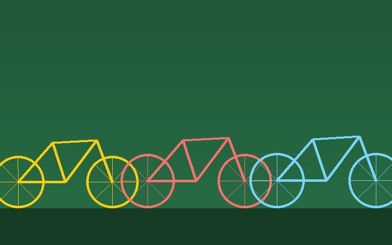

Om oss

Kedjan startade 2016 när några grannar ställde upp en arbetsbänk i ett cykelförråd.
Idag har föreningen drygt 250 medlemmar och ett tjugotal frivilliga. Vi får bidrag från kommunen och driver verkstaden utan vinstintresse.
Våra värderingar
- Cykla mer, slänga mindre
- Alla kan lära sig att laga sin cykel
- Kunskap ska delas